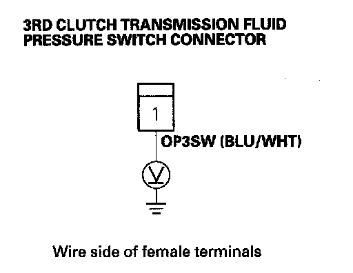
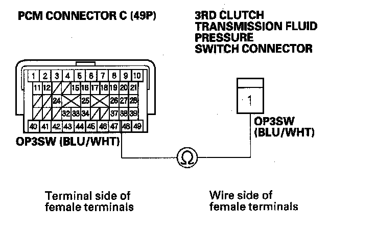

DTC Troubleshooting
DTC P0848: Open in 3rd Clutch Transmission Fluid Pressure Switch Circuit, or 3rd Clutch Transmission Fluid Pressure Switch Stuck OFFNOTE: Before you troubleshoot, record all freeze data and any on-board snapshot, and review General Troubleshooting Information.
1. Clear the DTC with the HDS.
2. Start the engine, and warm it up to normal operating temperature (the radiator fan comes on).
3. Drive the vehicle in 3rd gear in the M position, and verify with the HDS in the A/T data list that the SHIFT COMMAND indicates 3rd.
4. Check the 3rd PRESSURE SWITCH signal with the HDS in the A/T data list.
Is the 3rd PRESSURE SWITCH ON?
YES - Go to step 5.
NO - Go to step 7.
5. Drive the vehicle in 3rd gear in the M position for more than 5 seconds, then upshift to 4th gear, and drive in 4th gear for more than 5 seconds. Slow down and stop the wheels.
6. Monitor the OBD STATUS for P0848 in the DTCs/Freeze Data in A/T Mode Menu for a pass/fail.
Does the result indicate FAILED?
YES - Go to step 7.
NO - Intermittent failure, the system is OK at this time. Check for poor connections or loose terminals at the 3rd clutch transmission fluid pressure switch and the PCM. If the HDS indicates NOT COMPLETED, return to step 5 and recheck.
7. Turn the ignition switch OFF.
8. Disconnect the 3rd clutch transmission fluid pressure switch connector.
9. Turn the ignition switch ON (II).
10. Measure the voltage between the 3rd clutch transmission fluid pressure switch connector terminal and body ground.

Is there about 5 V?
YES - Replace the 3rd clutch transmission fluid pressure switch then go to step 20.
NO - Go to step 11.
11. Turn the ignition switch OFF.
12. Jump the SCS line with the HDS.
13. Disconnect PCM connector C (49P).
14. Check for continuity between PCM connector terminal C38 and the 3rd clutch transmission fluid pressure switch connector terminal.

Is there continuity?
YES - Check for poor connections and loose terminals at the 3rd clutch transmission fluid pressure switch and the PCM. If the connections are OK, go to step 15.
NO - Repair open in the wire between PCM connector terminal C38 and the 3rd clutch transmission fluid pressure switch, then go to step 20.
15. Reconnect all connectors.
16. Update the A/T software in the PCM if it does not have the latest software or substitute a known-good PCM.
17. Drive the vehicle in 3rd gear in the M position for more than 5 seconds, then upshift to 4th gear, and drive in 4th gear for more than 5 seconds. Slow down and stop the wheels.
18. Check for DTC(s) in the DTCs/Freeze Data in A/T Mode Menu with the HDS.
Is DTC P0848 indicated?
YES - If the PCM was updated, substitute a known-good PCM then recheck. If the PCM was substituted, go to step 1.
NO - Go to step 19.
19. Monitor the OBD STATUS for P0848 in the DTCs/Freeze Data in A/T Mode Menu for a pass/fail.
Does the result indicate PASSED?
YES - If the PCM was updated, troubleshooting is complete. If the PCM was substituted, replace the original PCM. If any other DTCs were indicated on step 18, go to the indicated DTC's troubleshooting.
NO - If the HDS indicates FAILED, check for poor connections and loose terminals at the 3rd clutch transmission fluid pressure switch and the PCM. If the PCM was updated, substitute a known-good PCM then recheck. If the PCM was substituted, go to step 1. If the HDS indicates NOT COMPLETED, return to step 17 and recheck.
20. Clear the DTC with the HDS.
21. Drive the vehicle in 3rd gear in the M position for more than 5 seconds, then upshift to 3rd gear, and drive in 3rd gear for more than 5 seconds. Slow down and stop the wheels.
22. Check for DTC(s) in the DTCs/Freeze Data in A/T Mode Menu with the HDS.
Is DTC P0848 indicated?
YES - Check for poor connections and loose terminals at the 3rd clutch transmission fluid pressure switch and the PCM, then go to step 1.
NO - Go to step 23.
23. Monitor the OBD STATUS for P0848 in the DTCs/Freeze Data in A/T Mode Menu for a pass/fail.
Does the result indicate PASSED?
YES - Troubleshooting is complete. If any other DTCs were indicated on step 22, go to the indicated DTC's troubleshooting.
NO - If the HDS indicates FAILED, check for poor connections and loose terminals at the 3rd clutch transmission fluid pressure switch and the PCM, then go to step 1. If the HDS indicates NOT COMPLETED, return to step 21 and recheck.